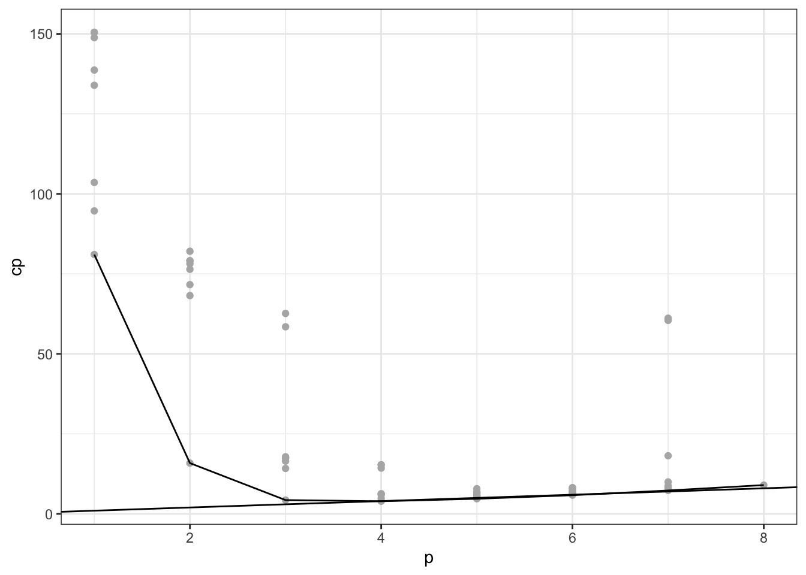

# overfitting simulation
# simulation for this???8.1 Overview of the model building process
The figure below presents a strategy for the building of a regression model. This strategy involves three or, sometimes, four phases:
Data collection and preparation
Reduction of explanatory or predictor variables (for exploratory observational studies)
Model refinement and selection
Model validation
Here we will overview each phase, then dive deeper later.
8.1.1 (1) Data collection
- The data collection requirements for building a regression model vary with the nature of the study. It is useful to distinguish four types of studies.
Controlled experiments
-
In a controlled experiment, the experimenter controls the levels of the explanatory variables and assigns treatment, consisting of a combination of levels of the explanatory to each experimental unit and observes the response.
- In controlled experiments, the explanatory variables are often called factors or control variables.
-
The data collection requirements for controlled experiments are straightforward, though not necessarily simple. Observations for each experimental unit are needed on the response variable and on the level of each of the control variables used for that experimental unit.
- There may be difficult measurement and scaling problems for the response variable that are unique to the area of application.
Controlled experiments with covariates
Statistical design of experiments uses supplemental information, such as characteristics of the experimental units, in designing the experiment so as to reduce the variance of the experimental error terms in the regression model.
-
Sometimes, however, it is not possible to incorporate this supplemental information into the design of the experiment. Instead, it may be possible for the experimenter to incorporate this information into the regression model and thereby reduce the error variance by including uncontrolled variables or covariates in the model.
- Use of covariates in the regression model make the analysis of the effects of the explanatory variables on the accuracy response more precise.
Confirmatory observational studies
These studies, based on observational, not experimental, data, are intended to test (i.e., to confirm or not to confirm) hypotheses derived from previous studies or from hunches.
-
For these studies, data are collected for explanatory variables that previous studies have shown to affect the response variable, as well as for the new variable or variables involved in the hypothesis.
In this context, the explanatory variable(s) involved in the hypothesis are sometimes called the primary variables, and the explanatory variables that are included to reflect existing knowledge are called the control variables (known risk factors in epidemiology).
The control variables here are not controlled as in an experimental study, but they are used to account for known influences on the response variable.
-
Data collection for confirmatory observational studies involves obtaining observations on the response variable, the control variables, and the primary explanatory variable(s).
- Here, as in controlled experiments, there may be important and complex problems of measurement.
Explanatory observational studies
In the social, behavioral, and health sciences, management, and other fields, it is often not possible to conduct controlled experiments. Furthermore, adequate knowledge for conducting confirmatory observational studies may be lacking.
As a result, many studies in these fields are exploratory observational studies where investigators search for explanatory variables that might be related to the response variable.
To complicate matters further, any available theoretical models may involve explanatory variables that are not directly measurable, such as a family’s future earnings ov the next 10 years.
Under these conditions, investigators are often forced to prospect for explanatory variables that could conceivably be related to the response variable under study. Obviously, such a set of potentially useful explanatory variables can be large.
-
After a lengthy list of potentially useful explanatory variables has been compiled, some of these variables can be quickly screened out. An explanatory variable (1) may not be fundamental to the problem, (2) may be subject to large measurement errors, and/or (3) may effectively duplicate another explanatory variable in the list.
- Explanatory variables that cannot be measured may either be deleted or replaced by proxy variables that are highly correlated with them.
-
The number of cases to be collected for an exploratory observational regression study depends on the size of the pool of potentially useful explanatory variables available at this stage.
More cases are required when the pool is large than when it is small.
A general rule of thumb states that there should be at least 6 to 10 cases for every variable in the pool.
The actual data collection for the pool of potentially useful explanatory variables and for the response variable again may involve important issues of measurement, just as for the other types of studies.
8.1.2 (1) Data preparation
Once the data have been collected, edit checks should be performed and plots prepared to identify gross data errors as well as extreme outliers.
Difficulties with data errors are especially prevalent in large data sets and should be corrected or resolved before the model building begins.
Whenever possible, the investigator should carefully monitor and control the data collection process to reduce the likelihood of data errors.
8.1.3 (2) Preliminary model investigation
Once the data have been properly edited, the formal modeling process can begin.
A variety of diagnostics should be employed to identify (1) the functional forms in which the explanatory variables should enter the regression model and (2) important interactions that should be included in the model.
Scatter plots and residual plots are useful for determining relationships and their strengths.
Selected explanatory variables can be fitted in regression functions to explore relationships, possible strong interactions and the need for transformations.
-
Whenever possible, of course, one should also rely on the investigator’s prior knowledge and expertise to suggest appropriate transformations and interactions to investigate. This is particularly important when the number of potentially useful explanatory variables is large.
- In this case, it may be very difficult to investigate all possible pairwise interactions, and prior knowledge should be used to identify the important ones.
8.1.4 (2) Reduction of explanatory variables
- Again this process looks different for the different types of studies.
Controlled experiments
The reduction of explanatory variables in the model-building phase is usually not an important issue for controlled experiments.
The experimenter has chosen the explanatory variables for investigation, and a regression model is to be developed that will enable the investigator to study the effects’of these variables on the response variable.
After the model has been developed, including the use of appropriate functional forms for the variables and the inclusion of important interaction terms, the inferential procedures considered in previous chapters will be used to determine whether the explanatory variables have effects on the response variable and, if so, the nature and magnitude of the effects.
-
Controlled experiments can usually avoid many of the problems in exploratory observational studies discussed below.
- For example, the effects of latent predictor variables are minimized by using randomization.
In addition, adequate ranges of the explanatory variables can be selected and correlations among the explanatory variables can be eliminated by appropriate choices of their levels.
Controlled experiments with covariates
In studies of controlled experiments with covariates, some reduction of the covariates may take place investigators often cannot be sure in advance that the selected covariates will be helpful in reducing the error variance.
The number of covariates considered in controlled experiments is usually small, so no special problems are encountered in determining whether some or all of the covariates should be dropped from the regression model.
Confirmatory observational studies
Generally, no reduction of explanatory variables should take place in confirmatory observational studies.
The control variables were chosen on the basis of prior knowledge and should be retained for comparison with earlier studies even if some of the control variables tum out not to lead to any error variance reduction in the study at hand.
The primary variables are the ones whose influence on the response variable is to be examined and therefore need to be present in the model.
Explanatory observational studies
In exploratory observational studies, the number of explanatory variables that remain after the initial screening typically is still large.
-
Further, many of these variables frequently will be highly intercorrelated. Hence, the investigator usually will wish to reduce the number of explanatory variables to be used in the final model. There are several reasons for this.
A regression model with numerous explanatory variables may be difficult to maintain.
Further, regression models with a limited number of explanatory variables are easier to work with and understand.
Finally, the presence of many highly intercorrelated explanatory variables may substantially increase the sampling variation of the regression coefficients, detract from the model’s descriptive abilities (falsely inflated \(R^2\)), and not improve, or even worsen, the model’s predictive ability.
An actual worsening of the model’s predictive ability can occur when explanatory variables are kept in the regression model that are not related to the response variable, given the other explanatory variables in the model (overfitting). In that case, the variances of the fitted values \(\sigma^2\{\hat{Y}_i\}\) tend to become larger with the inclusion of the useless additional explanatory variables.
(Note that the multicollinearity effects were all confirmed with the simulation in Section 6.6.6)
-
Once the investigator has tentatively decided upon the functional form of the regression relations (whether given variables are to appear in linear form, quadratic form, etc.) and whether any interaction terms are to be included, the next step in many exploratory observational studies is to identify a few “good” subsets of \(X\) variables for further intensive study.
- These subsets should include not only the potential explanatory variables first-order form but also any needed quadratic and other curvature terms and any necessary interaction terms.
-
The identification of “good” subsets of potentially useful explanatory variables to be included in the final regression model and the determination of appropriate functional and interaction relations for these variables usually constitute some of the most difficult problems in regression analysis.
Since the uses of regression models vary, no one subset of explanatory vruiables may always be “best”.
For instance, a descriptive use of a regression model typically will emphasize precise estimation of the regression coefficients, whereas a predictive use will focus on the prediction errors.
Often, different subsets of the pool of potential explanatory variables will best serve these varying purposes.
Even for a given purpose, it is often found that several subsets are about equally “good” according to a given criterion, and the choice among these “good” subsets needs to be made on the basis of additional considerations.
-
The choice of a few appropriate subsets of explanatory variables for final consideration in exploratory observational studies needs to be done with great care. Elimination of key explanatory variables can seriously damage the explanatory power of the model and lead to biased estimates of regression coefficients, mean responses, and predictions of new observations, as well as biased estimates of the error variance.
The bias in these estimates is related to the fact that with observational data, the error terms in an underfitted regression model may reflect nonrandom effects of the explanatory variables not incorporated in the regression model. Important omitted explanatory variables are sometimes called latent explanatory variables.
On the other hand, if too many explanatory variables are included in the subset, then this overfitted model will often result in variances of estimated parameters that are larger than those for simpler models.
Another danger with observational data is that important explanatory variables may be observed only over narrow ranges. As a result, such important explanatory variables may be omitted just because they occur in the sample within a narrow range of values and therefore turn out to be statistically nonsignificant.
-
A number of algorithms have been developed to help with variable selection.
But the process of developing a useful regression model must be pragmatic and needs to utilize large doses of subjective judgment.
Explanatory variables that are considered essential should be included in the regression model before any automation is sought.
Further, algorithms that identify only a single subset of explanatory variables as “best” need to be supplemented so that additional subsets are also considered before the final regression mopel is decided upon.
WRONG APPROACH
-
Fit full model and drop all unsignificant coefficients (according to \(t\)-test).
Reason for bad: This procedure can lead to the dropping of important intercorrelated explanatory variables (easier to fail to reject with high degree of multicollinearity).
So a good procedure needs to be able to take into account multicollinearity (i.e. not drop all of them).
8.1.5 (3) Model refinement and selection
At this stage in the model-building process, the tentative regression model, or the several “good” regression models in the case of exploratory observational studies, need to checked in detail for curvature and interaction effects (this is the second check of higher order terms, one was done preliminarily in (2) Reduction of explanatory variables).
Residual plots are helpful in deciding whether one model is to be preferred over another. In addition, the diagnostic checks to be described in the next chapter are useful for identifying influential outlying observations, multicollinearity, etc.
The selection of the ultimate regression model often depends greatly upon these diagnostic results. For example, one fitted model may be very much influenced by a single case, whereas another is not. Again, one fitted model may show correlations among the error terms, whereas another does not.
-
When repeat observations are available, formal tests for lack of fit can be made. In any case, a variety of residual plots and analyses can be employed to identify any lack of fit, outliers, and influential observations.
- For instance, residual plots against cross-product and/or power terms not included in the regression model can be useful in identifying ways in which the model fit can be improved further.
-
When an automatic selection procedure is utilized for an exploratory observational study and only a single model is identified as “best,” other models should also be explored.
One procedure is to use the number of explanatory variables in the model identified as “best” as an estimate of the number of explanatory variables needed in the regression model.
Then the investigator explores and identifies other candidate models with approximately the same number of explanatory variables identified by the automatic procedure.
Eventually, after thorough checking and various remedial actions, such as transformations, the investigator narrows the number of competing models to one or just a few.
At this point, it is good statistical practice to assess the validity of the remaining candidates through model validation studies. These methods can be used to help decide upon a final regression model, and to determine how well the model will perform in practice.
8.1.6 (4) Model validation
Model validity refers to the stability and reasonableness of the regression coefficients, the plausibility and usability of the regression function, and the ability to generalize inferences drawn from the regression analysis.
Validation is a useful and necessary pan of the model-building process. Several methods of assessing model validity will be described at the end of this chapter.
8.1.7 Overfitting simulation
8.1.8 Demo
- Modeling process: Start with first order model with all predictors and assess diagnostics for intial problems
# load data
data_surgery <- ALSM::SurgicalUnit %>%
select(-lny)
# start with first order model with all predictors and assess diagnostics
mod_start <- lm(y ~ ., data_surgery)
plot(mod_start, which = 1:2)
See curvature and non constant variance and some slight issues with normality.
Try linearizing transformation and fix the non constant variance with \(Y' = \ln(Y)\).
# fit model with transformed response
mod_start_prime <- lm(log(y) ~ ., data_surgery)
plot(mod_start_prime, which = 1:2)- Transformation fixed most issues, now can continue to investigate the appropriateness of first-order additive terms.
# correlation matrix and scatterplot matrix to assess strength of linear relationships (on the lookout for curvature)
# -> extra steps to get new response variable in there
corr <- data_surgery %>%
mutate(lny = log(y)) %>%
select(-y) %>%
cor %>%
round(3)
corrplot::corrplot(corr)No apparent curvature for \(X_k\) with the response \(\ln(Y)\).
Strong linear associations with the response (\(X_3, X_4\) are the highest).
May be some multicollinearity (\(X_4\) is correlated with \(X_1, X_2, X_3\)).
# check for significant interaction effects by plotting residuals against all possible interactions
# fit fully crossed interaction model to extract design matrix
mod_start_prime_crossed <- lm(log(y) ~ .^2, data_surgery, x = TRUE)
# get residuals of original model
e <- residuals(mod_start_prime)
# extract interaction terms
# -> interaction symbol : gets recoded as .
X_int <- mod_start_prime_crossed$x %>%
data.frame %>%
select(contains("."), -contains("Intercept"))# plot residuals against all interaction terms
nms_x_int <- colnames(X_int)
map2(X_int, nms_x_int, function(x, nm) {
plot(x = x, y = e, main = nm)
lines(lowess(x = x, y = e), col = "red")
abline(h = 0, col = "grey")
})
# no obvious visual signs of significant interactions -> maybe x3 and x4
# -> following textbook and ignoring these8.2 Criteria for model selection
-
From any set of \(p - 1\) predictors, \(2^{p-1}\) alternative models can be constructed (this comes from the fact that each predictor can either be included or exlcuded from the model).
For example if \(p = 3\), then there are two predictors + intercept.
Can have intercept only model (\(Y_i = \beta_0 + \epsilon_i\)), a one variable model (\(Y_i = \beta_0 + \beta_1 X_1 + \epsilon_i\) or \(Y_i = \beta_0 + \beta_1 X_2 + \epsilon_i\)) and the only two predictor model (\(Y_i = \beta_0 + \beta_1 X_1 + \beta_2 X_2 + \epsilon_i\)) for a total of \(2^{3-1} = 4\) models.
The number of possible models increases quickly, and will be impossible to examine every model in depth. Model selection procedures, also known as subset selection or variables selection procedures, have been developed to identify a small group of regression models that are “good” according to a specified criterion.
A detailed examination can then be made of a limited number of the more promising or “candidate” models, leading to the selection of the final regression model to be employed. This limited number might consist of three to six “good” subsets according to the criteria specified, so the investigator can then carefully study these regression models for choosing the final model.
8.2.1 \(R^2_p\) or \(SSE_p\) criterion
- Want to identify subset in which the coefficient of multiple determination \(R^2\) is high, or equivalently \(SSE\) is low (both of which are indexed by how many parameters are in the model = one less than the number of the predictors because of the intercept).
\[R^2_p = 1 - \frac{SSE_p}{SSTO}\]
Since the denominator is constant for all models (just used \(\bar{Y}\)), \(R^2_p\) and \(SSE_p\) vary inversely.
-
Note that the \(R^2_p\) criterion is not intended to identify the subsets that maximize this criterion.
We know that \(R^2_p\) can never decrease as additional \(X\) variables are included in the model. Hence, \(R^2_p\) will be a maximum when all \(P - 1\) (\(P\) = total number of available predictors) potential \(X\) variables are included in the regression model.
Dimininshing return: The intent in using the \(R^2_p\) criterion is to find the point where adding more \(X\) variables is not worthwhile because it leads to a very small increase in \(R^2_p\).
# pick random model to calculate each of the following statistics for (so can compare to book as well)
mod_example <- lm(log(y) ~ x1 + x2 + x3, data_surgery)
# p
# -> including intercept
mod_example %>% coef %>% length[1] 4# extract R^2_p and SSE_p
mod_example %>% glance %>% pull(r.squared)[1] 0.7572331mod_example %>% anova %>% tidy %>% filter(term == "Residuals") %>% pull(sumsq)[1] 3.10851# match book!
# more ways
augment(mod_example, data = data.frame(lny = log(data_surgery$y))) %>%
yardstick::rsq_trad(data = ., truth = "lny", estimate = ".fitted")# A tibble: 1 × 3
.metric .estimator .estimate
<chr> <chr> <dbl>
1 rsq_trad standard 0.757yardstick::rsq_trad_vec(truth = log(data_surgery$y),
estimate = predict(mod_example))[1] 0.7572331compare(mod_example %>% glance %>% pull(r.squared),
yardstick::rsq_trad_vec(truth = log(data_surgery$y),
estimate = predict(mod_example)))$comparison
[1] TRUE
$`mod_example %>% glance %>% pull(r.squared)`
[1] 0.7572331
$`yardstick::rsq_trad_vec(truth = log(data_surgery$y), estimate = predict(mod_example))`
[1] 0.75723318.2.2 \(R^2_{a,p}\) or \(MSE_p\) criterion
- Can use \(R^2_{adj} = R^2_{a,p} \text{ (in this context)}\) to take into account the number of parameters in the model through the degrees of freedom. We know that it can decrease as the number of parameters increases if the decrease in \(MSE\) isn’t enough to offset the loss of degrees of freedom.
\[R^2_{a,p} = 1 - \Big(\frac{n - 1}{n - p}\Big) \frac{SSE_p}{SSTO} = 1 - \frac{MSE_p}{SSTO / (n - 1)}\]
- This only increases if \(MSE_p\) decreases since \(SSTO / (n - 1)\) is fixed for the given \(Y\) observations. Thus, \(R^2_{a,p}\) and \(MSE_p\) provide equivalent information.
Demo
# extract R^2_a.p and MSE_p
mod_example %>% glance %>% pull(adj.r.squared)[1] 0.7426671mod_example %>% glance %>% pull(sigma) %>% raise_to_power(2)[1] 0.06217021# match book!8.2.3 Mallow’s \(C_p\) criterion
Overview
- This criterion is concerned with the total mean squared error of the \(n\) fitted values for each subset regression model.
\[C_p = \frac{SSE_p}{MSE(X_1, \ldots, X_{P-1})} + (2p - n)\]
Specifics
8.2.4 \(AIC_p\) and \(BIC_p\) criterion
These two criterion, in addition to \(R^2_{a,p}\) and \(C_p\), penalize models having large number of predictors.
\(AIC\) = Akaike’s information criteria and \(BIC\) = Bayesian information criteria.
Goal: Find models with small values of each:
\[ \begin{align*} AIC &= n \ln(SSE_p) - n \ln(n) + 2p\\ BIC &= n \ln(SSE_p) - n \ln(n) + p\ln(n) \end{align*} \]
Notice the first terms \(n \ln(SSE_p)\) decrease as \(p\) increases, the second term \(n \ln(n)\) is fixed (for a given sample size of \(n\)), and the last term (the penalty term) increases as \(p\) increases.
Models with small \(SSE_p\) do well with this criteria as long as the penalties aren’ too large. And for \(n \ge 8\), the penalty for \(BIC_p\) is larger \(\Longrightarrow\) \(BIC_p\) favors more parsimonious models.
Demo
# different ways to calculate these statistics
# -> (taking into account something vs not taking into account something)
# -> https://stats.stackexchange.com/questions/43733/what-is-the-difference-between-aic-and-extractaic-in-r
# one way
# calculate AIC_p and BIC_p
mod_example %>% glance %>% pull(AIC)[1] 9.08398mod_example %>% AIC[1] 9.08398mod_example %>% glance %>% pull(BIC)[1] 19.0289mod_example %>% BIC[1] 19.0289# does not match matches book...
# another way
extractAIC(mod_example, k = 2) # AIC used default k = 2[1] 4.0000 -146.1614mod_example %>% extractAIC(k = log(nobs(.))) # BIC -> just have a different k value = ln(n)[1] 4.0000 -138.2054# match book!
# be careful comparing, need to compare like to like
# -> from now on always going to use the not book way because it has better compatibility across lm() and glm()# calculate needed items
SSE_p <- mod_example %>% anova %>% tidy %>% filter(term == "Residuals") %>% pull(sumsq)
p <- mod_example %>% coef %>% length
n <- nobs(mod_example_full)
# AIC = n ln(SSE_p) - n ln(n) + 2p
AIC_p <- n * log(SSE_p) - n * log(n) + 2*p
# BIC = n ln(n) SSE_p - n ln(n) + p ln(n)
BIC_p <- n * log(SSE_p)- n * log(n) + p * log(n)
compare(extractAIC(mod_example)[2], AIC_p)$comparison
[1] TRUE
$`extractAIC(mod_example)[2]`
[1] -146.1614
$AIC_p
[1] -146.1614compare(extractAIC(mod_example, k = log(nobs(mod_example)))[2], BIC_p)$comparison
[1] TRUE
$`extractAIC(mod_example, k = log(nobs(mod_example)))[2]`
[1] -138.2054
$BIC_p
[1] -138.20548.2.5 \(PRESS_p\) criterion
- The \(PRESS_p\) (prediction sum of squares) criterion is a measure of how well the use of the fitted values for a subset model (in terms of the training data) can predict the observed responses \(Y_i\). It is similar to \(SSE = \sum (Y_i - \hat{Y}_i)^2\) except each fitted value \(\hat{Y}_i\) is obtained by:
Deleting the \(i\)th case from the dataset.
Estimating the regression function for the subset model from the remaining \(n - 1\) cases.
Then using the fitted regression function to obtain the predicted value \(\hat{Y}_{i(i)}\) for the \(i\)th case (note \(\hat{Y}_{i(i)}\) = predicted value for the \(i\)th case when the \((i)\)th observation was omitted when the regression function was fit.
- The prediction error for the \(i\)th case is then
\[Y_i - \hat{Y}_{i(i)}\]
- The \(PRESS_p\) criterion is the sum of the squared prediction errors over all \(n\) cases:
\[\sum_{i = 1}^n (Y_i - \hat{Y}_{i(i)})^2\]
Good models: Models with small \(PRESS_p\) fit well in the sense of having small prediction errors and are considered candidate models.
\(PRESS_p\) values can be calculated without requiring \(n\) separate regression runs, each time deleting one of the \(n\) cases using formulas in the next chapter.
Note that \(PRESS_p\) values can also be used for model validation.
8.3 Automatic search procedures for model selection
Two common approaches for automating variable selection are “best” subsets regression and stepwise regression.
Will not cover all options and variations of methods that are available.
It is essential that the specific features of the package employed be fully understood so that intelligent use of the package can be made.
For example, some variations allow variables to be considered in groups (such as all indicators for a categorical predictor) or to force variables into the model (if have a prioir beliefs).
-
All to say, there is no unique way of searching for “good” subsets of \(X\) variables, and subjective elements must play an important role in the search process.
Judgment needs to play an important role in model building for exploratory studies. Some explanatory variables may be known to be more fundamental than others and therefore should be retained in the regression model if the primary purpose is to develop a good explanatory model.
For example, keep all indicator variables for a categorical predictor, keep lower order terms if a higher order term is included, etc.
-
An important issue in exploratory model building that we have not will be considered is the bias in estimated regression coefficients and in estimated mean responses.
- This is where model validation comes into play (don’t get lost in finding the best fit)
Demo
8.3.1 “Best” subsets algorithms
These algorithms provide the best subsets according to the specified criterion, as well as identifying several “good” subsets for each possible number of \(X\) variables in the model.
When the pool of potential \(X\) variables is very large, say greater than 30 or 40, even the “best” subset algorithms may require excessive computer time. Under these conditions, one of the stepwise regression may need to be used.
Use several different criterion when evaluating the “best” subsets. This is one way to get multiple candidate models.
Once the investigator has identified a few “good” subsets for intensive examination, a final choice of the model variables must be made with the help of residual analyses, industry knowledge, and finally then confirmed through model validation.
-
Strengths
Exhaustive search of subsets.
Results in several good candidate models.
-
Weaknesses
- Computationally infeasible when there is a large number of predictors.
Demo
# define function to format results for plotting
format_results <- function(best_subs) {
# get summary statistics
summ = summary(best_subs)
# combine to single dataframe and rename columns
results = summ[2:6] %>% reduce(bind_cols)
colnames(results) = names(summ)[2:6]
# append number of predictor variables
results = results %>% mutate(p = sort(rep(1:best_subs$np, best_subs$nbest))[1:nrow(summ$outmat)], .before = 1)
return(results)
}
# define function to plot results
plot_results <- function(res, var = "rsq") {
# plot point for each model at each p
# -> add line connecting optimal models at each p
p = ggplot(data = res,
aes(x = p,
y = .data[[var]])) +
geom_point(color = "grey70") +
geom_line(data = res %>% group_by(p) %>% slice_head(n = 1))
# conditionally add Cp = p line
if (identical(var, "cp")) {
p = p +
geom_abline(intercept = 0,
slope = 1)
}
return(p)
}
# perform best subsets regression and save necessary output
# -> note there are options to force variables in and out
# -> nbest = nmax does ALL possible models
best_subs <- leaps::regsubsets(formula(mod_start_prime), data = data_surgery,
nbest = 1, nvmax = 8, method = "exhaustive")
# format and results
results <- format_results(best_subs)
map(colnames(results)[-1], \(var) plot_results(results, var))[[1]]
[[2]]
[[3]]
[[4]]
[[5]]# this gives the single best model for number of predictor variables
# -> can use this to most easily get which variables are in the single best model_p
best_subs <- olsrr::ols_step_best_subset(mod_example_full)
# plot results also works, just plots only the best
best_subs %>% rename(p = n) %>% {map(colnames(best_subs)[4:10], \(var) plot_results(., var))}[[1]]
[[2]]
[[3]]
[[4]]
[[5]]
[[6]]
[[7]]8.3.2 Stepwise regression methods
Motivation
- In those occasional cases when the pool of potential \(X\) variables contains 30 to 40 or even more variables, use of a “best” subsets algorithm may not be feasible. An automatic search procedure that develops the “best” subset of \(X\) variables sequentially may then be helpful.
Overview
This search method develops a sequence of regression models, at each step adding or deleting an \(X\) variable (iterative procedure).
Can use one of several different criterion for adding or deleting an \(X\) variable, such as: reduction in error sum of squares, coefficient of partial correlation, \(t^*\) statistic, or \(F^*\) statistic.
-
Strengths
- Computational more efficient than evaluating ALL possible subsets.
-
Weaknesses
Experience has shown that each of the stepwise search procedures can sometimes err by identifying a suboptimal regression model as “best.”
End result is only a SINGLE “best” model. So it hides potentially other “good” models, whose “goodness” need to be evaluated using a variety of diagnostics.
-
Strategy then
We should use the subset identified by the automatic search procedure as a starting point for searching for other “good” subsets.
One possibility is to treat the number of \(X\) variables in the regression model identified by the automatic search procedure as being about the right subset size and then use the “best” subsets procedure for subsets of this and nearby sizes.
Forward stepwise regression
Step 0: Start with intercept-only model.
-
Step 1: Fit all one variable models and evaluate criteria. Find the best. For example, the largest \(\lvert t^* \rvert\) or equivalently smallest \(p\)-value.
- Since the degrees of freedom associated with \(MSE\) vary depending on the number of \(X\) variables in the model, and since repeated tests on the same data are undertaken, fixed \(t^*\) limits for adding or deleting a variable have no precise probabilistic meaning. For this reason, software programs often favor the use of predetermined \(\alpha\)-limits.
\[t^*_{k1} = \sqrt{\frac{\hat{\beta}_{k1}}{s\{\hat{\beta}_{k1}\}}} \Longrightarrow p\text{-value}\]
- Step 2: Start with the variable from the previous step and fit all 2 variable models. Find the best second variable and see if it meets the keep criteria.
\[t^*_{k1} = \sqrt{\frac{MSR(X_{k2} \mid X_{k1})}{MSE(X_{k1}, X_{k2})}} \Longrightarrow p\text{-value}\]
Step 3: Check to see if a variable should be deleted. Fit model with all predictors currently kept and see if one variable should be dropped (i.e. see if criteria is on wrong side of the keep criteria).
Step 4: Continue adding and checking to see if previous variable should be dropped until adding a variable doesn’t improve the model and dropping a variable doesn’t improve the model. Then algorithm is done.
-
Note that the stepwise regression algorithm allows an \(X\) variable, brought into the model at an earlier stage, to be dropped subsequently if it is no longer helpful in conjunction with variables added at later stages.
- i.e. The order in which variables enter the regression model does not reflect their importance.
Choice of keep criteria in terms of \(\alpha\)
-
The choice of \(\alpha\) to-enter and \(\alpha\)-to-remove values essentially represents a balancing of opposing tendencies.
Simulation studies have shown that for scenarios with large pools of 1) uncorrelated predictors 2) that are not related to the response, larger \(\alpha\)-to-enter values results in models that allow too many variables. Conversely, a small \(\alpha\)-to-enter values results in models that are often underspecified, resulting in \(\sigma^2\) being badly overestimated and the procedure being too conservative.
The max \(\alpha\)-to-enter < min \(\alpha\)-to-remove. If not, will get an endless loop.
Demo
# perform stepwise regression (forward)
# specify starting and ending models
mod_null <- lm(log(y) ~ 1, data_surgery) # starting with intercept model
mod_full <- mod_start_prime # just need formula
formula(mod_full)log(y) ~ x1 + x2 + x3 + x4 + x5 + x6 + x7 + x8# run procedure
# -> criterion is based on AIC from extractAIC()
mod_step_aic <- step(object = mod_null, scope = formula(mod_full), direction = "both", k = 2)Start: AIC=-75.72
log(y) ~ 1
Df Sum of Sq RSS AIC
+ x3 1 5.4708 7.3337 -103.811
+ x4 1 5.3967 7.4079 -103.268
+ x2 1 2.8303 9.9742 -87.205
+ x8 1 1.7808 11.0238 -81.802
+ x1 1 0.7770 12.0275 -77.096
+ x6 1 0.6889 12.1156 -76.703
<none> 12.8045 -75.716
+ x5 1 0.2694 12.5351 -74.864
+ x7 1 0.2067 12.5978 -74.595
Step: AIC=-103.81
log(y) ~ x3
Df Sum of Sq RSS AIC
+ x2 1 3.0209 4.3129 -130.479
+ x4 1 2.2018 5.1319 -121.089
+ x1 1 1.5512 5.7825 -114.644
+ x8 1 1.1386 6.1951 -110.922
<none> 7.3337 -103.811
+ x6 1 0.2582 7.0755 -103.747
+ x5 1 0.2390 7.0947 -103.600
+ x7 1 0.0659 7.2679 -102.298
- x3 1 5.4708 12.8045 -75.716
Step: AIC=-130.48
log(y) ~ x3 + x2
Df Sum of Sq RSS AIC
+ x8 1 1.4709 2.8420 -151.002
+ x1 1 1.2044 3.1085 -146.161
+ x4 1 0.6979 3.6150 -138.011
+ x7 1 0.2280 4.0849 -131.412
+ x5 1 0.1648 4.1481 -130.583
<none> 4.3129 -130.479
+ x6 1 0.0822 4.2306 -129.518
- x2 1 3.0209 7.3337 -103.811
- x3 1 5.6613 9.9742 -87.205
Step: AIC=-151
log(y) ~ x3 + x2 + x8
Df Sum of Sq RSS AIC
+ x1 1 0.6642 2.1778 -163.376
+ x4 1 0.4658 2.3761 -158.669
+ x6 1 0.1372 2.7048 -151.674
<none> 2.8420 -151.002
+ x5 1 0.0709 2.7711 -150.367
+ x7 1 0.0241 2.8179 -149.462
- x8 1 1.4709 4.3129 -130.479
- x2 1 3.3531 6.1951 -110.922
- x3 1 4.9403 7.7823 -98.605
Step: AIC=-163.38
log(y) ~ x3 + x2 + x8 + x1
Df Sum of Sq RSS AIC
+ x6 1 0.0966 2.0812 -163.826
<none> 2.1778 -163.376
+ x5 1 0.0760 2.1018 -163.293
+ x4 1 0.0415 2.1363 -162.415
+ x7 1 0.0224 2.1554 -161.935
- x1 1 0.6642 2.8420 -151.002
- x8 1 0.9307 3.1085 -146.161
- x2 1 2.9891 5.1670 -118.722
- x3 1 5.4459 7.6237 -97.717
Step: AIC=-163.83
log(y) ~ x3 + x2 + x8 + x1 + x6
Df Sum of Sq RSS AIC
+ x5 1 0.0769 2.0043 -163.86
<none> 2.0812 -163.83
- x6 1 0.0966 2.1778 -163.38
+ x7 1 0.0219 2.0593 -162.40
+ x4 1 0.0163 2.0649 -162.25
- x1 1 0.6236 2.7048 -151.67
- x8 1 0.9754 3.0567 -145.07
- x2 1 2.8287 4.9099 -119.48
- x3 1 5.0742 7.1554 -99.14
Step: AIC=-163.86
log(y) ~ x3 + x2 + x8 + x1 + x6 + x5
Df Sum of Sq RSS AIC
<none> 2.0043 -163.858
- x5 1 0.0769 2.0812 -163.826
- x6 1 0.0975 2.1018 -163.293
+ x7 1 0.0326 1.9718 -162.743
+ x4 1 0.0022 2.0021 -161.919
- x1 1 0.6284 2.6327 -151.133
- x8 1 0.9011 2.9054 -145.810
- x2 1 2.7644 4.7688 -119.052
- x3 1 5.0752 7.0795 -97.716# confirm from extractAIC()
extractAIC(mod_step_aic)[1] 7.0000 -163.8583# repeat for BIC criteria -> k = log(nobs(mod))
mod_step_bic <- step(object = mod_null, scope = formula(mod_full), direction = "both", k = log(nobs(mod_null)), trace = 0) # criterion is based on BIC from extractAIC()
extractAIC(mod_step_bic, k = log(nobs(mod_step_bic)))[1] 5.000 -153.431# compare models
# -> BIC is more conservative, which makes sense
compare(formula(mod_step_aic), formula(mod_step_bic))$comparison
$comparison$result
[1] FALSE
$comparison$description
[1] "formulas differ in contents"
$comparison$`element-wise`
NULL
$`formula(mod_step_aic)`
log(y) ~ x3 + x2 + x8 + x1 + x6 + x5
$`formula(mod_step_bic)`
log(y) ~ x3 + x2 + x8 + x1# perform stepwise regression (forward)
# -> based on AIC
mod_step_aic2 <- olsrr::ols_step_both_aic(mod_full, progress = TRUE, details = TRUE)Stepwise Selection Method
-------------------------
Candidate Terms:
1 . x1
2 . x2
3 . x3
4 . x4
5 . x5
6 . x6
7 . x7
8 . x8
Step 0: AIC = 79.52928
log(y) ~ 1
Variables Entered/Removed:
Enter New Variables
-------------------------------------------------------------------
Variable DF AIC Sum Sq RSS R-Sq Adj. R-Sq
-------------------------------------------------------------------
x3 1 51.434 5.471 7.334 0.427 0.416
x4 1 51.977 5.397 7.408 0.421 0.410
x2 1 68.040 2.830 9.974 0.221 0.206
x8 1 73.443 1.781 11.024 0.139 0.123
x1 1 78.149 0.777 12.028 0.061 0.043
x6 1 78.543 0.689 12.116 0.054 0.036
x5 1 80.381 0.269 12.535 0.021 0.002
x7 1 80.651 0.207 12.598 0.016 -0.003
-------------------------------------------------------------------
- x3 added
Step 1 : AIC = 51.43434
log(y) ~ x3
Enter New Variables
------------------------------------------------------------------
Variable DF AIC Sum Sq RSS R-Sq Adj. R-Sq
------------------------------------------------------------------
x2 1 24.767 8.492 4.313 0.663 0.650
x4 1 34.156 7.673 5.132 0.599 0.583
x1 1 40.602 7.022 5.783 0.548 0.531
x8 1 44.323 6.609 6.195 0.516 0.497
x6 1 51.499 5.729 7.075 0.447 0.426
x5 1 51.645 5.710 7.095 0.446 0.424
x7 1 52.947 5.537 7.268 0.432 0.410
------------------------------------------------------------------
- x2 added
Step 2 : AIC = 24.76682
log(y) ~ x3 + x2
Remove Existing Variables
------------------------------------------------------------------
Variable DF AIC Sum Sq RSS R-Sq Adj. R-Sq
------------------------------------------------------------------
x2 1 51.434 5.471 7.334 0.427 0.416
x3 1 68.040 2.830 9.974 0.221 0.206
------------------------------------------------------------------
Enter New Variables
------------------------------------------------------------------
Variable DF AIC Sum Sq RSS R-Sq Adj. R-Sq
------------------------------------------------------------------
x8 1 4.243 9.963 2.842 0.778 0.765
x1 1 9.084 9.696 3.109 0.757 0.743
x4 1 17.234 9.190 3.615 0.718 0.701
x7 1 23.834 8.720 4.085 0.681 0.662
x5 1 24.663 8.656 4.148 0.676 0.657
x6 1 25.727 8.574 4.231 0.670 0.650
------------------------------------------------------------------
- x8 added
Step 3 : AIC = 4.243223
log(y) ~ x3 + x2 + x8
Remove Existing Variables
------------------------------------------------------------------
Variable DF AIC Sum Sq RSS R-Sq Adj. R-Sq
------------------------------------------------------------------
x8 1 24.767 8.492 4.313 0.663 0.650
x2 1 44.323 6.609 6.195 0.516 0.497
x3 1 56.640 5.022 7.782 0.392 0.368
------------------------------------------------------------------
Enter New Variables
------------------------------------------------------------------
Variable DF AIC Sum Sq RSS R-Sq Adj. R-Sq
------------------------------------------------------------------
x1 1 -8.131 10.627 2.178 0.830 0.816
x4 1 -3.424 10.428 2.376 0.814 0.799
x6 1 3.572 10.100 2.705 0.789 0.772
x5 1 4.879 10.033 2.771 0.784 0.766
x7 1 5.783 9.987 2.818 0.780 0.762
------------------------------------------------------------------
- x1 added
Step 4 : AIC = -8.130569
log(y) ~ x3 + x2 + x8 + x1
Remove Existing Variables
------------------------------------------------------------------
Variable DF AIC Sum Sq RSS R-Sq Adj. R-Sq
------------------------------------------------------------------
x1 1 4.243 9.963 2.842 0.778 0.765
x8 1 9.084 9.696 3.109 0.757 0.743
x2 1 36.524 7.638 5.167 0.596 0.572
x3 1 57.529 5.181 7.624 0.405 0.369
------------------------------------------------------------------
Enter New Variables
------------------------------------------------------------------
Variable DF AIC Sum Sq RSS R-Sq Adj. R-Sq
------------------------------------------------------------------
x6 1 -8.580 10.723 2.081 0.837 0.821
x5 1 -8.048 10.703 2.102 0.836 0.819
x4 1 -7.170 10.668 2.136 0.833 0.816
x7 1 -6.689 10.649 2.155 0.832 0.814
------------------------------------------------------------------
- x6 added
Step 5 : AIC = -8.580332
log(y) ~ x3 + x2 + x8 + x1 + x6
Remove Existing Variables
------------------------------------------------------------------
Variable DF AIC Sum Sq RSS R-Sq Adj. R-Sq
------------------------------------------------------------------
x6 1 -8.131 10.627 2.178 0.830 0.816
x1 1 3.572 10.100 2.705 0.789 0.772
x8 1 10.176 9.748 3.057 0.761 0.742
x2 1 35.768 7.895 4.910 0.617 0.585
x3 1 56.105 5.649 7.155 0.441 0.396
------------------------------------------------------------------
Enter New Variables
------------------------------------------------------------------
Variable DF AIC Sum Sq RSS R-Sq Adj. R-Sq
------------------------------------------------------------------
x5 1 -8.613 10.800 2.004 0.843 0.823
x7 1 -7.151 10.745 2.059 0.839 0.819
x4 1 -7.005 10.740 2.065 0.839 0.818
------------------------------------------------------------------
- x5 added
Step 6 : AIC = -8.612898
log(y) ~ x3 + x2 + x8 + x1 + x6 + x5
Remove Existing Variables
------------------------------------------------------------------
Variable DF AIC Sum Sq RSS R-Sq Adj. R-Sq
------------------------------------------------------------------
x5 1 -8.580 10.723 2.081 0.837 0.821
x6 1 -8.048 10.703 2.102 0.836 0.819
x1 1 4.113 10.172 2.633 0.794 0.773
x8 1 9.435 9.899 2.905 0.773 0.749
x2 1 36.193 8.036 4.769 0.628 0.589
x3 1 57.529 5.725 7.080 0.447 0.390
------------------------------------------------------------------
Enter New Variables
------------------------------------------------------------------
Variable DF AIC Sum Sq RSS R-Sq Adj. R-Sq
------------------------------------------------------------------
x7 1 -7.497 10.833 1.972 0.846 0.823
x4 1 -6.673 10.802 2.002 0.844 0.820
------------------------------------------------------------------
No more variables to be added or removed.
Final Model Output
------------------
Model Summary
-------------------------------------------------------------
R 0.918 RMSE 0.207
R-Squared 0.843 Coef. Var 3.211
Adj. R-Squared 0.823 MSE 0.043
Pred R-Squared 0.784 MAE 0.162
-------------------------------------------------------------
RMSE: Root Mean Square Error
MSE: Mean Square Error
MAE: Mean Absolute Error
ANOVA
-------------------------------------------------------------------
Sum of
Squares DF Mean Square F Sig.
-------------------------------------------------------------------
Regression 10.800 6 1.800 42.209 0.0000
Residual 2.004 47 0.043
Total 12.805 53
-------------------------------------------------------------------
Parameter Estimates
---------------------------------------------------------------------------------------
model Beta Std. Error Std. Beta t Sig lower upper
---------------------------------------------------------------------------------------
(Intercept) 4.054 0.235 17.272 0.000 3.582 4.527
x3 0.015 0.001 0.653 10.909 0.000 0.012 0.018
x2 0.014 0.002 0.473 8.051 0.000 0.010 0.017
x8 0.351 0.076 0.280 4.597 0.000 0.197 0.505
x1 0.072 0.019 0.233 3.839 0.000 0.034 0.109
x6 0.087 0.058 0.089 1.512 0.137 -0.029 0.203
x5 -0.003 0.003 -0.078 -1.343 0.186 -0.009 0.002
---------------------------------------------------------------------------------------plot(mod_step_aic2)# extract formula from ending model
mod_step_aic2_formula <- mod_step_aic2$predictors %>% {paste0("log(y) ~ ", paste0(., collapse = " + "))} %>% as.formula
compare(formula(mod_step_aic), mod_step_aic2_formula)$comparison
[1] TRUE
$`formula(mod_step_aic)`
log(y) ~ x3 + x2 + x8 + x1 + x6 + x5
$mod_step_aic2_formula
log(y) ~ x3 + x2 + x8 + x1 + x6 + x5
<environment: 0x7fd67710dcb8># confirm using AIC()
# -> this result is found in the printed output!
AIC(lm(mod_step_aic2_formula, data_surgery))[1] -8.612898# perform stepwise regression (forward)
# -> based on p-values, using default alpha-to-enter and alpha-to-remove
mod_step_p <- olsrr::ols_step_both_p(mod_full, pent = 0.1, prem = 0.3)
mod_step_p
Stepwise Selection Summary
-------------------------------------------------------------------------------------
Added/ Adj.
Step Variable Removed R-Square R-Square C(p) AIC RMSE
-------------------------------------------------------------------------------------
1 x3 addition 0.427 0.416 117.4780 51.4343 0.3755
2 x2 addition 0.663 0.650 50.4920 24.7668 0.2908
3 x8 addition 0.778 0.765 18.9010 4.2432 0.2384
4 x1 addition 0.830 0.816 5.7340 -8.1306 0.2108
-------------------------------------------------------------------------------------8.3.3 Other stepwise procedures
Forward selection
- The forward selection search procedure is a simplified version of forward stepwise regression, omitting the test whether a variable once entered into the model should be dropped.
Demo
# perform forward selection regression
# -> based on AIC (could do BIC same way for step())
mod_forward <- step(object = mod_null, scope = formula(mod_full), direction = "forward", k = 2, trace = 0)
mod_forward2 <- olsrr::ols_step_forward_aic(mod_full)
mod_forward2_formula <- mod_forward2$predictors %>% {paste0("log(y) ~ ", paste0(., collapse = " + "))} %>% as.formula
compare(formula(mod_forward), mod_forward2_formula)$comparison
[1] TRUE
$`formula(mod_forward)`
log(y) ~ x3 + x2 + x8 + x1 + x6 + x5
$mod_forward2_formula
log(y) ~ x3 + x2 + x8 + x1 + x6 + x5
<environment: 0x7fd6757d0ab8>$comparison
[1] TRUE
$`formula(mod_step_aic)`
log(y) ~ x3 + x2 + x8 + x1 + x6 + x5
$`formula(mod_forward)`
log(y) ~ x3 + x2 + x8 + x1 + x6 + x5# olsrr based on p-values
# -> default enter seems high
olsrr::ols_step_forward_p(mod_full, pent = 0.3)
Selection Summary
-------------------------------------------------------------------------
Variable Adj.
Step Entered R-Square R-Square C(p) AIC RMSE
-------------------------------------------------------------------------
1 x3 0.4273 0.4162 117.4783 51.4343 0.3755
2 x2 0.6632 0.6500 50.4918 24.7668 0.2908
3 x8 0.7780 0.7647 18.9015 4.2432 0.2384
4 x1 0.8299 0.8160 5.7340 -8.1306 0.2108
5 x6 0.8375 0.8205 5.5282 -8.5803 0.2082
6 x5 0.8435 0.8235 5.7725 -8.6129 0.2065
-------------------------------------------------------------------------Backward elimation
The backward elimination search procedure is the opposite of forward selection. It begins with the model containing all potential \(X\) variables and identifies the one with the largest \(p\)-value and determines if it should be dropped. Then repeat with the remaining \(P-2\) \(X\) variables.
This process continues until no further \(X\) variables can be dropped.
A stepwise modification can also be adapted that allows variables eliminated earlier to be added later: this modification is called the backward stepwise regression procedure.
-
For small and moderate numbers of variables in the pool of potential \(X\) variables, some statisticians argue for backward stepwise search over forward stepwise search.
A potential disadvantage of the forward stepwise approach is that the \(MSE\) (and hence s{_k}$) will lend to be inflated during the initial steps, because important predictors have been omitted \(\Longrightarrow\) \(t^*\) test statistics that are too small.
For the backward stepwise procedure, \(MSE\) values tend to be more nearly unbiased because important predictors are retained at each step.
An argument in favor of the backward stepwise procedure can also be made in situations where it is useful as a first step to look at each \(X\) variable in the regression function adjusted for all the other \(X\) variables in the pool.
# perform backward selection regression
# -> based on AIC (could do BIC same way for step())
mod_backward <- step(object = mod_full, scope = formula(mod_full), direction = "backward", k = 2, trace = 0)
mod_backward2 <- olsrr::ols_step_backward_aic(mod_full)
mod_backward2_formula <- mod_forward2$predictors %>% {paste0("log(y) ~ ", paste0(., collapse = " + "))} %>% as.formula
compare(formula(mod_backward), mod_backward2_formula) # same models, different order$comparison
$comparison$result
[1] FALSE
$comparison$description
[1] "formulas differ in contents"
$comparison$`element-wise`
NULL
$`formula(mod_backward)`
log(y) ~ x1 + x2 + x3 + x5 + x6 + x8
$mod_backward2_formula
log(y) ~ x3 + x2 + x8 + x1 + x6 + x5
<environment: 0x7fd6a36465b8>$comparison
$comparison$result
[1] FALSE
$comparison$description
[1] "formulas differ in contents"
$comparison$`element-wise`
NULL
$`formula(mod_step_aic)`
log(y) ~ x3 + x2 + x8 + x1 + x6 + x5
$`formula(mod_backward)`
log(y) ~ x1 + x2 + x3 + x5 + x6 + x8# olsrr based on p-values
olsrr::ols_step_backward_p(mod_full, prem = 0.3, progress = TRUE, details = TRUE)Backward Elimination Method
---------------------------
Candidate Terms:
1 . x1
2 . x2
3 . x3
4 . x4
5 . x5
6 . x6
7 . x7
8 . x8
We are eliminating variables based on p value...
- x4
Backward Elimination: Step 1
Variable x4 Removed
Model Summary
-------------------------------------------------------------
R 0.920 RMSE 0.207
R-Squared 0.846 Coef. Var 3.220
Adj. R-Squared 0.823 MSE 0.043
Pred R-Squared 0.781 MAE 0.162
-------------------------------------------------------------
RMSE: Root Mean Square Error
MSE: Mean Square Error
MAE: Mean Absolute Error
ANOVA
-------------------------------------------------------------------
Sum of
Squares DF Mean Square F Sig.
-------------------------------------------------------------------
Regression 10.833 7 1.548 36.103 0.0000
Residual 1.972 46 0.043
Total 12.805 53
-------------------------------------------------------------------
Parameter Estimates
---------------------------------------------------------------------------------------
model Beta Std. Error Std. Beta t Sig lower upper
---------------------------------------------------------------------------------------
(Intercept) 4.037 0.236 17.096 0.000 3.562 4.513
x1 0.071 0.019 0.233 3.824 0.000 0.034 0.109
x2 0.014 0.002 0.468 7.900 0.000 0.010 0.017
x3 0.015 0.001 0.655 10.901 0.000 0.012 0.018
x5 -0.004 0.003 -0.084 -1.429 0.160 -0.009 0.002
x6 0.087 0.058 0.089 1.503 0.140 -0.029 0.203
x7 0.058 0.067 0.059 0.872 0.388 -0.076 0.192
x8 0.388 0.087 0.309 4.437 0.000 0.212 0.564
---------------------------------------------------------------------------------------
- x7
Backward Elimination: Step 2
Variable x7 Removed
Model Summary
-------------------------------------------------------------
R 0.918 RMSE 0.207
R-Squared 0.843 Coef. Var 3.211
Adj. R-Squared 0.823 MSE 0.043
Pred R-Squared 0.784 MAE 0.162
-------------------------------------------------------------
RMSE: Root Mean Square Error
MSE: Mean Square Error
MAE: Mean Absolute Error
ANOVA
-------------------------------------------------------------------
Sum of
Squares DF Mean Square F Sig.
-------------------------------------------------------------------
Regression 10.800 6 1.800 42.209 0.0000
Residual 2.004 47 0.043
Total 12.805 53
-------------------------------------------------------------------
Parameter Estimates
---------------------------------------------------------------------------------------
model Beta Std. Error Std. Beta t Sig lower upper
---------------------------------------------------------------------------------------
(Intercept) 4.054 0.235 17.272 0.000 3.582 4.527
x1 0.072 0.019 0.233 3.839 0.000 0.034 0.109
x2 0.014 0.002 0.473 8.051 0.000 0.010 0.017
x3 0.015 0.001 0.653 10.909 0.000 0.012 0.018
x5 -0.003 0.003 -0.078 -1.343 0.186 -0.009 0.002
x6 0.087 0.058 0.089 1.512 0.137 -0.029 0.203
x8 0.351 0.076 0.280 4.597 0.000 0.197 0.505
---------------------------------------------------------------------------------------
No more variables satisfy the condition of p value = 0.3
Variables Removed:
- x4
- x7
Final Model Output
------------------
Model Summary
-------------------------------------------------------------
R 0.918 RMSE 0.207
R-Squared 0.843 Coef. Var 3.211
Adj. R-Squared 0.823 MSE 0.043
Pred R-Squared 0.784 MAE 0.162
-------------------------------------------------------------
RMSE: Root Mean Square Error
MSE: Mean Square Error
MAE: Mean Absolute Error
ANOVA
-------------------------------------------------------------------
Sum of
Squares DF Mean Square F Sig.
-------------------------------------------------------------------
Regression 10.800 6 1.800 42.209 0.0000
Residual 2.004 47 0.043
Total 12.805 53
-------------------------------------------------------------------
Parameter Estimates
---------------------------------------------------------------------------------------
model Beta Std. Error Std. Beta t Sig lower upper
---------------------------------------------------------------------------------------
(Intercept) 4.054 0.235 17.272 0.000 3.582 4.527
x1 0.072 0.019 0.233 3.839 0.000 0.034 0.109
x2 0.014 0.002 0.473 8.051 0.000 0.010 0.017
x3 0.015 0.001 0.653 10.909 0.000 0.012 0.018
x5 -0.003 0.003 -0.078 -1.343 0.186 -0.009 0.002
x6 0.087 0.058 0.089 1.512 0.137 -0.029 0.203
x8 0.351 0.076 0.280 4.597 0.000 0.197 0.505
---------------------------------------------------------------------------------------
Elimination Summary
-----------------------------------------------------------------------
Variable Adj.
Step Removed R-Square R-Square C(p) AIC RMSE
-----------------------------------------------------------------------
1 x4 0.846 0.8226 7.0288 -7.4974 0.2070
2 x7 0.8435 0.8235 5.7725 -8.6129 0.2065
-----------------------------------------------------------------------8.4 Model validation
8.4.1 Overview
- The final step in the model-building process is the validation of the selected regression models. Model validation usually involves checking a candidate model against independent data. Three basic ways of validating a regression model are:
Collection of new data to check the model and its predictive ability.
Comparison of results with theoretical expectations, earlier empirical results, and simulation results.
Use of a holdout sample to check the model and its predictive ability.
Other types of studies
-
When a regression model is used in a controlled experiment, a repetition of the experiment and its analysis serves to validate the findings in the initial study if similar results for the regression coefficients, predictive ability, and the like are obtained. Same for confirmatory observational studies, just use other data and repeat analyses.
This is because there is no issue with variable selection.
Additionally, if the model is to be used for making predictions over the entire range of the \(X\) observations, a possibility is to include data points that are uniformly distributed over the \(X\) space.
-
On the contrast, definitely need to validate for exploratory observational studies because they often start with large pools of \(X\) variables which is narrowed down significantly.
- For these studies, validation of the regression model involves also the appropriateness of the variables selected, as well as the magnitudes of the regression coefficients, the predictive ability of the model, and the like.
8.4.2 Collection of new data to check model
-
The best means of model validation is through the collection of new data. The purpose of collecting new data is to be able to examine whether the regression model developed from the earlier data is still applicable for the new data.
- If so, one has assurance about the applicability of the model to data beyond those on which the model is based.
Methods of checking validity
- There are a variety of methods of examining the validity of the regression model against the new data.
-
One validation method is to reestimate the model form chosen earlier using the new data.
The estimated regression coefficients and various characteristics of the fitted model are then compared for consistency to those of the regression model based on the em’lier data.
If the results are consistent, they provide strong support that the chosen regression model is applicable under broader circumstances than those related to the original data.
-
A second validation method is designed to calibrate the predictive capability of the selected regression model.
When a regression model is developed from given data, it is inevitable that the selected model is chosen, at least in large part, because it fits well the data at hand.
For a different set of random outcomes, one may likely have arrived at a different model in terms of the predictor valiables selected and/or their functional forms and interaction terms present in the model.
A result of this model development process is that the \(MSE\) will tend to understate the inherent variability in making future predictions from the selected model.
A means of measuring the actual predictive capability of the selected regression model is to use this model to predict each case in the new data set and then to calculate the mean squared prediction error \(MSPR\):
(where \(Y_i\) is the value of the response valiable in the \(i\)th validation case; \(\hat{Y}_i\) is the predicted value for the \(i\)th validation case based on the model-building dataset; and \(n^*\) is the number of cases in the validation set)
\[MSPR = \frac{1}{n^*}\sum_{i = 1}^{n^*} (Y_i - \hat{Y}_i)^2\]
-
If the \(MSPR\) is fairly close to \(MSE\) based on the regression fit to the model-building data set, then the \(MSE\) for the selected regression model is not seriously biased and gives an appropriate indication of the predictive ability of the model.
- If the \(MSPE\) is much larger than \(MSE\), one should rely on the \(MSPE\) as an indicator of how well the selected regression model will predict in the future.
Difficulties in replicating a study
Difficulties often arise when new data are collected to validate a regression model, especially with observational studies.
Essentially, hard to get exactly identical conditions. In observational studies, things like settings and time frequently change.
-
Even though perfect replication is impossible, all validation studies are useful because No single study is fully useful until we know how much the results of the study can be generalized.
If a replication study for which the conditions of the setting differ only slightly from those of the initial study substantially different regression results, then we learn that the results of the initial study cannot be readily generalized.
On the other hand, if the conditions differ substantially and the regression results are still similar, we find that the regression results can be generalized to apply under substantially varying conditions.
Still another possibility is that the regression results for the replication study differ substantially from those of the initial study, the differences being related to changes in the setting. This information may be useful for enriching the regression model by including new explanatory variables that make the model more widely applicable.
8.4.3 Comparison with theory, empirical evidence, or simulation results
In some cases, theory, simulation rdmlts, or previous empirical results may be helpful in determining whether the selected model is reasonable.
Comparisons of regression coefficients and predictions with theoretical expectations, previous empirical results, or simulation results should be made.
Unfortunately, there is often little theory that can be used to validate regression models.
8.4.4 Data splitting
Overview
By far the preferred method to validate a regression model is through the collection of new data. Often, however, this is neither practical nor feasible.
-
An alternative is to use a training and testing set, which in effect an attempt to simulate replication of the study. The validation data set is used for validation in the same way as when new data are collected.
The regression coefficients can be reestimated for the selected model and then compareed for consistency with the coefficients obtained from the model-building data set.
Also, predictions can be made for the testing data from the model built on the training data in order to calibrate the predictive ability of this regression model for the new data.
When the calibration data set is large enough, one can also study how the “good” models considered in the model selection phase fare with the new data.
How to split
\(n_{\text{train}} >> n_{\text{test}}\), can even go 50/50 if large enough dataset.
Splits of the data can be made at random or stratified to ensure certain spread of cases (roughly equal representation of \(X\) levels) in the training and testing datasets.
-
Can also do \(k\)-fold cross validation. The \(k\) estimates of prediction error are then combined to produce a \(k\)-fold cross-validation estimate.
Note that when \(k = n\), this criteria is equal to \(PRESS_p\) \(\Longrightarrow\) \(k\)-fold cross validation estimates are approximations to \(PRESS_p\).
Can also use a variation of \(PRESS_p\) where \(m\) observations are held out rather than 1, and the \(n-m\) observations are used to fit the models.
-
If a dataset for an exploratory observational study is very large, it can be divided into three parts.
The first part is used for model training, the second part for cross-validation and model selection, and the third part for testing and calibrating the final model.
This approach avoids any bias resulting from estimating the regression parameters from the same data set used for developing the model.
But it still uses less data to fit the model, so less precise standard errors of estimated coefficients.
Drawbacks
A possible drawback of data splitting is that the variances of the estimated regression coefficients developed from the model-building data set will usually be larger than those that would have been obtained from the fit to the entire data set.
If the model-building data set is reasonably large, however, these variances generally will not be that much larger than those for the entire data set.
In any case, once the model has been validated, it is customary practice to use the entire data set for estimating the final regression model.
Results
-
When regression models built on observational data do not predict well outside the range of the \(X\) observations in the data set (extrapolation), the usual reason is the existence of multicollinearity among the \(X\) variables.
- Ridge regression or other biased estimation techniques are possible solutions to this.
8.4.5 Demo – Data splitting
# random split 2-way
# -> make train / test split
data_split <- data_surgery %>% rsample::initial_split(prop = .7)
data_train <- data_split %>% rsample::training()
data_test <- data_split %>% rsample::testing()
# stratified split
# -> https://www.tidymodels.org/start/case-study/
# -> based on response variable (ensures representative training and testing)
# -> if numeric, does based on binned quantiles
# -> if categorical, does it based on proportion of levels
data_split_strat <- data_surgery %>% rsample::initial_split(prop = .7, strata = y)
data_train2 <- data_split_strat %>% rsample::training()
data_test2 <- data_split_strat %>% rsample::testing()
# random split 3-way
# -> make train / validation / test split
data_split_diamonds <- diamonds %>% rsample::initial_validation_split(prop = c(0.6, 0.2))
data_train_diamonds <- data_split_diamonds %>% rsample::training()
data_validation_diamonds <- data_split_diamonds %>% rsample::validation()
data_test_diamonds <- data_split_diamonds %>% rsample::testing()
# k folds
# -> https://rsample.tidymodels.org/articles/Working_with_rsets.html
# -> access analysis and holdout data for the first fold
# -> setup to map() a function to perform on each fold split
kfolds <- rsample::vfold_cv(data = data_surgery, v = 10, repeats = 1, strata = y)
kfolds# 10-fold cross-validation using stratification
# A tibble: 10 × 2
splits id
<list> <chr>
1 <split [48/6]> Fold01
2 <split [48/6]> Fold02
3 <split [48/6]> Fold03
4 <split [48/6]> Fold04
5 <split [48/6]> Fold05
6 <split [48/6]> Fold06
7 <split [48/6]> Fold07
8 <split [50/4]> Fold08
9 <split [50/4]> Fold09
10 <split [50/4]> Fold10data_analysis1 <- rsample::analysis(kfolds$splits[[1]])
data_holdout1 <- rsample::assessment(kfolds$splits[[1]])
# IMPORTANT NOTE: in practice would do the resampling method on the TRAINING data, then get the final model performance on the testing set# random split
# get indices in training data
# then subset data to training and testing data
in_train <- caret::createDataPartition(data_surgery$y, p = 0.7)
data_train <- data_surgery[in_train$Resample1, ]
data_test <- data_surgery[-(in_train$Resample1), ]# random split
# sample a proportion for training set and get all non matches for testing
# -> requires ID variable (saving new object to not overwrite original data)
data_surgery_tmp <- data_surgery %>% mutate(id = row_number())
data_train <- data_surgery_tmp %>% slice_sample(prop = 0.7)
data_test <- anti_join(data_surgery_tmp, data_train, by = join_by(id))8.4.6 Demo – Get best model from train
# random split 2-way
# -> make train / test split
set.seed(2)
data_split <- data_surgery %>% rsample::initial_split(prop = .7)
data_train <- data_split %>% rsample::training()
data_test <- data_split %>% rsample::testing()# get final best model
# perform best subsets regression and save necessary output
# -> note there are options to force variables in and out
# -> nbest = nmax does ALL possible models
best_subs <- leaps::regsubsets(formula(mod_start_prime), data = data_train,
nbest = 8, nvmax = 8, method = "exhaustive")
# format and results
results <- format_results(best_subs)
map(colnames(results)[-1], \(var) plot_results(results, var))[[1]]
[[2]]
[[3]]
[[4]]
[[5]]# criteria -> best model
# rsq -> 4
# rss -> 4
# adjr2 -> 3
# cp -> 4
# bic -> 3
# going with best 4 parameter model (3 Xs)
summary(best_subs)$which %>% data.frame %>% filter(row.names(.) %in% c("X3")) X.Intercept. x1 x2 x3 x4 x5 x6 x7 x8
X3 TRUE FALSE TRUE TRUE FALSE FALSE FALSE FALSE TRUE# for sake of simplicity, not evaluating multiple models and skipping some criteria like PRESSp
# fit final model using best model
# -> keeping x7 so indicator variables x7 and x8 are together
mod_train <- lm(log(y) ~ x2 + x3 + x7 + x8, data_train)
mod_train %>% tidy# A tibble: 5 × 5
term estimate std.error statistic p.value
<chr> <dbl> <dbl> <dbl> <dbl>
1 (Intercept) 4.32 0.181 23.9 5.71e-22
2 x2 0.0156 0.00195 8.00 3.93e- 9
3 x3 0.0133 0.00157 8.46 1.16e- 9
4 x7 0.0466 0.0796 0.586 5.62e- 1
5 x8 0.344 0.0986 3.49 1.44e- 3mod_train %>% glance# A tibble: 1 × 12
r.squared adj.r.squared sigma statistic p.value df logLik AIC BIC
<dbl> <dbl> <dbl> <dbl> <dbl> <dbl> <dbl> <dbl> <dbl>
1 0.821 0.799 0.207 36.7 1.55e-11 4 8.44 -4.88 4.79
# ℹ 3 more variables: deviance <dbl>, df.residual <int>, nobs <int>8.4.7 Demo – Validate model
# make predictions on testing data
preds <- predict(mod_train, newdata = data_test)
# calculate rmse
yardstick::rmse_vec(truth = log(data_test$y), estimate = preds)[1] 0.3088084[1] 0.09536261# compare regression coefficients fit on training data to testing data for consistency
mod_test <- lm(formula(mod_train), data_test)
tidy(mod_test)# A tibble: 5 × 5
term estimate std.error statistic p.value
<chr> <dbl> <dbl> <dbl> <dbl>
1 (Intercept) 4.30 0.521 8.26 0.00000270
2 x2 0.00977 0.00595 1.64 0.126
3 x3 0.0194 0.00446 4.35 0.000952
4 x7 -0.0948 0.217 -0.437 0.670
5 x8 0.555 0.278 2.00 0.0691 tidy(mod_train)# A tibble: 5 × 5
term estimate std.error statistic p.value
<chr> <dbl> <dbl> <dbl> <dbl>
1 (Intercept) 4.32 0.181 23.9 5.71e-22
2 x2 0.0156 0.00195 8.00 3.93e- 9
3 x3 0.0133 0.00157 8.46 1.16e- 9
4 x7 0.0466 0.0796 0.586 5.62e- 1
5 x8 0.344 0.0986 3.49 1.44e- 3# compare MSEp and MSE
compare(mod_test %>% glance %>% pull(sigma) %>% raise_to_power(2),
mod_train %>% glance %>% pull(sigma) %>% raise_to_power(2))$comparison
$comparison$result
[1] FALSE
$comparison$description
[1] "Mean relative difference: 0.4767689"
$comparison$`element-wise`
[1] FALSE
$`mod_test %>% glance %>% pull(sigma) %>% raise_to_power(2)`
[1] 0.08199894
$`mod_train %>% glance %>% pull(sigma) %>% raise_to_power(2)`
[1] 0.0429044[1] 0.2415945Conclusions
Coefficients of the testing model are all within a standard error or two of the training model (only concern in x7 switches signs)
\(MSE\)s are close, especially considering scale of \(var(ln(y))\) for reference. So it does perform well for predictive accuracy.
# k folds
kfolds <- rsample::vfold_cv(data = data_surgery, v = 10, repeats = 1, strata = y)
# function to:
# 1) fit model on analysis data
# 2) make predictions on holdout data
# ... will be the model formula
holdout_results <- function(splits, ...) {
# fit the model to the analysis data (90%: 9 of the 10 folds)
mod_kfold = lm(..., data = rsample::analysis(splits))
# save the holdout data (10%: last fold)
data_holdout = rsample::assessment(splits)
# `augment` will save the predictions with the holdout data set
preds = augment(mod_kfold, newdata = data_holdout)
return(preds)
}
# fit models for k-fold cross validation
kfolds$results <- kfolds$splits %>% map(holdout_results, formula(mod_train))
# calculate rmse for each fold
kfolds$rmse <- kfolds$results %>% map_dbl(\(df) yardstick::rmse_vec(truth = log(df$y),estimate = df$`.fitted`))
# calculate final cross validation rmse
kfolds$rmse %>% mean[1] 0.2440127# fit a single linear regression model on entire data for practice
# -> https://www.tidymodels.org/start/models/
# make the parsnip model
spec_linreg <- parsnip::linear_reg()
# train the model
fit_linreg <- mod_linreg %>%
parsnip::fit(log(y) ~ ., data = data_surgery)Error in eval(expr, envir, enclos): object 'mod_linreg' not foundtidy(fit_linreg)Error in eval(expr, envir, enclos): object 'fit_linreg' not found# fit models for all resamples
# -> https://www.tidymodels.org/start/resampling/
# use kfolds from above
# define workflow
wf_linreg <- workflows::workflow() %>%
workflows::add_model(spec_linreg) %>%
workflows::add_formula(formula(mod_train))
wf_linreg══ Workflow ════════════════════════════════════════════════════════════════════
Preprocessor: Formula
Model: linear_reg()
── Preprocessor ────────────────────────────────────────────────────────────────
log(y) ~ x2 + x3 + x7 + x8
── Model ───────────────────────────────────────────────────────────────────────
Linear Regression Model Specification (regression)
Computational engine: lm # fit cross validation models
rs_fit_linreg <- wf_linreg %>%
tune::fit_resamples(object = .,
resamples = kfolds,
metrics = yardstick::metric_set(yardstick::rmse))
# get final cross validation measures
workflowsets::collect_metrics(rs_fit_linreg)# A tibble: 1 × 6
.metric .estimator mean n std_err .config
<chr> <chr> <dbl> <int> <dbl> <chr>
1 rmse standard 0.244 10 0.0325 Preprocessor1_Model1compare(kfolds$rmse %>% mean,
workflowsets::collect_metrics(rs_fit_linreg) %>% pull(mean))$comparison
[1] TRUE
$`kfolds$rmse %>% mean`
[1] 0.2440127
$`workflowsets::collect_metrics(rs_fit_linreg) %>% pull(mean)`
[1] 0.2440127